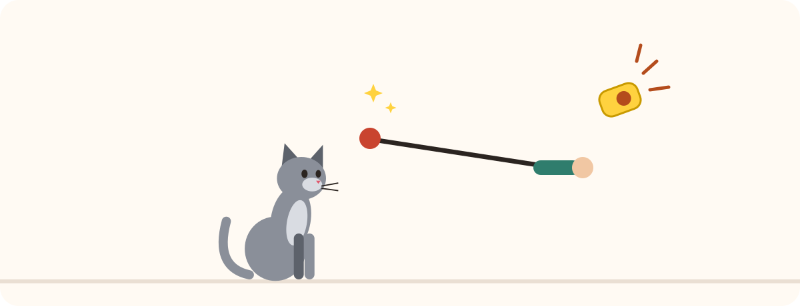
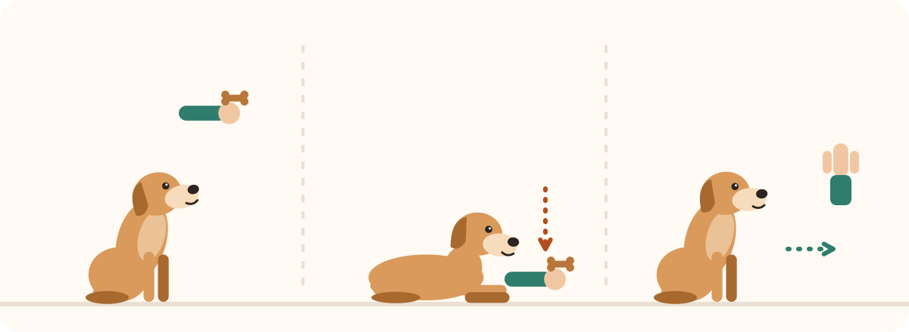
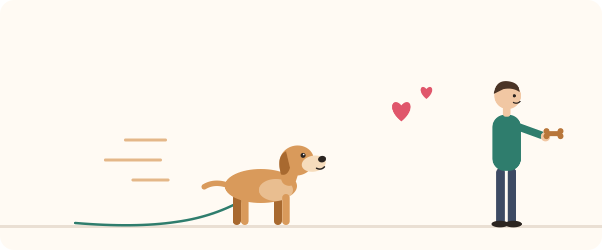

Giochi di intelligenza per cani: il confronto
Un cane che ragiona è spesso un cane più tranquillo. I giochi di intelligenza gli fanno cercare il cibo con il naso e le zampe, e stancano la sua testa quanto una passeggiata. Ma tra puzzle, tappeti e dispenser, quale scegliere? Ecco il nostro confronto, in base al livello e al carattere del tuo cane.
I criteri di scelta
- Il livello: un gioco troppo difficile scoraggia. Inizia facile, perché il tuo cane riesca subito.
- La robustezza: un cane che mordicchia ha bisogno di un modello solido, senza pezzetti da ingoiare.
- La sorveglianza: quasi tutti i puzzle si fanno insieme, non quando è solo.
- La pulizia: plastica lavabile o tessuto lavabile in lavatrice.
- La taglia: adatta al suo muso e alle sue zampe.
I 5 tipi a confronto
| Tipo | Punti di forza | Limiti | Per chi? |
|---|---|---|---|
| Puzzle facile (coperchi da sollevare) | Ideale per capire il principio | Risolto in fretta da un cane esperto | Principianti, cuccioli, cani anziani |
| Puzzle a livelli (scorrimenti, cassetti, leve) | Vero ragionamento, si può progredire | Pezzi rimovibili, sotto sorveglianza | Cani che hanno capito il principio |
| Tappeto olfattivo | Allena il fiuto, molto calmante | Il tessuto si può strappare | Tutti i cani, sorvegliati all'inizio |
| Dispenser di crocchette (palla, cubo) | Fa muovere, rallenta i pasti | Rumoroso sulle piastrelle | Cani attivi, golosi |
| Peluche nascondino | Ricerca e «sventramento» senza distruggere | Fragile per i grandi masticatori | Cani giocherelloni, piccoli e medi |
1. Il puzzle facile: per cominciare
Scomparti con coperchi o coni da sollevare, sotto cui si nasconde un bocconcino. Il tuo cane scopre che spingendo o sollevando ottiene un premio. È il miglior punto di partenza, anche per un cucciolo o un cane anziano.
Coperchi semplici da sollevare per imparare il principio.
2. Il puzzle a livelli: per progredire
Scorrimenti, cassetti e leve da combinare: questi giochi richiedono più gesti nell'ordine giusto. Si fanno insieme a te e si prestano benissimo al clicker training: clicca ogni buona idea. Riponili dopo la sessione, perché i pezzi rimovibili possono essere masticati.
Scorrimenti e cassetti per un cane che conosce già il gioco.
3. Il tappeto olfattivo: per il fiuto
Si spargono le crocchette tra le strisce di tessuto e il cane le cerca con il naso. Annusare stanca la testa e calma: ideale con il brutto tempo o dopo una giornata agitata.
Lavabile in lavatrice, con strisce fitte per nascondere bene le crocchette.
4. Il dispenser di crocchette: muoversi mangiando
Una palla o un cubo che rilascia crocchette quando il cane lo fa rotolare. Trasforma il pasto in gioco e rallenta i cani che mangiano troppo in fretta. Scegli la gomma morbida se hai vicini al piano di sotto.
5. Il peluche nascondino
Un grande peluche (un tronco, una casetta) dentro cui si nascondono piccoli peluche che il cane deve tirare fuori. È un gioco di ricerca che soddisfa la voglia di «sventrare» senza distruggere i tuoi cuscini. Da riservare ai cani che non fanno a pezzi tutto in pochi minuti.
Piccoli peluche da estrarre da uno grande: ricerca e gioco.
Quale gioco per il tuo cane?
- Cucciolo: un puzzle facile o un tappeto olfattivo, in sessioni brevissime.
- Cane molto attivo o da lavoro: puzzle a livelli e giochi di fiuto, oltre a vere attività. Anche la calma dopo la sessione si impara.
- Cane goloso: un dispenser o un tappeto olfattivo per rallentare i pasti.
- Cane anziano: giochi facili, senza sforzo fisico, che mantengono viva la curiosità.
- Cane ansioso: il tappeto olfattivo, perché annusare calma. Evita i giochi rumorosi.
Niente budget per un gioco? Nascondi qualche crocchetta in un cartone delle uova o arrotolala in un vecchio asciugamano: un ottimo primo gioco di intelligenza, sempre sotto sorveglianza.
Giochi di intelligenza o giochi di attivazione?
I giochi di intelligenza si fanno soprattutto con te. Per un cane che deve tenersi occupato da solo e in sicurezza, i giochi da riempire in gomma sono spesso più adatti: vedi il nostro confronto dei giochi per il cane che resta solo.
Usare bene un gioco di intelligenza
- Mostraglielo la prima volta: lascia che ti veda nascondere il bocconcino.
- Aiutalo se si blocca, invece di lasciarlo scoraggiare.
- Usa la sua razione per evitare il sovrappeso.
- Varia i giochi per mantenere l'interesse.
Per saperne di più: il clicker training per principianti · i giochi per il cane che resta solo · il modellamento · la guida al cane.
Leggi anche

Clicker training per principianti: cane e gatto
Caricare il clicker, i primi esercizi e gli errori da evitare: il metodo passo passo, per cane e gatto.

Insegnare al cane «seduto», «terra» e «resta»
L'adescamento per seduto e terra, poi le «3 D» per un resta solido: il metodo gentile, passo dopo passo.

Quale marsupio per bocconcini scegliere? Il confronto
Clip, marsupio, silicone o gilet: quale scegliere per premiare il cane al momento giusto, in casa e in passeggiata.